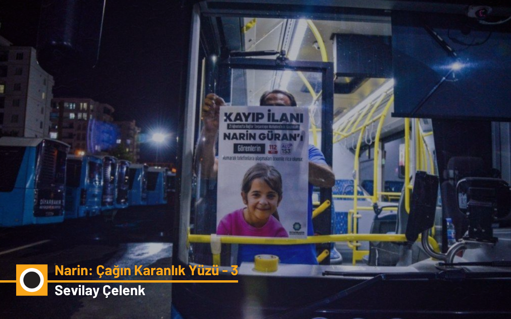

2025-11-19T13:37:38+03:00
Narin Güran vakasının dördüncü bölümünde, Ali Duran Topuz dezenformasyonun nasıl yayıldığını, sahte sosyal medya hesaplarının kamuoyunu nasıl yönlendirdiğini ve medyanın…
Narin Güran vakasında 31 Ağustos 2024’te yaşanan gelişmeler, sosyal medya paylaşımları ve sahte haberlerin soruşturmayı nasıl şekillendirdiğini anlatan bu yazı, bilgi…
Narin Güran vakasında sessizlik, susma hakkı ve masumiyet karinesi ekseninde adalet, medya ve yargı ilişkisini irdeleyen bir analiz.
Medya, siyaset ve yargının kesişiminde adalet arayışını; bilgi kirliliği, önyargı ve vicdan ekseniyle ele alan bir analiz.
Narin Güran cinayeti, son yılların en medyatik davasına konu oldu. Yargılama başladı bitti, aileden üç kişi müebbet hapis cezasına çarptırıldı. Fakat ne medyanın çok bilen…
ChatGPT yardımıyla (Daraltılmış-baz hariç) diğer raporların karşılaştırmalı analizi ve hukuki değerlendirmesi.
Narin Güran cinayeti davasında mahkemeye sunulan üç farklı raporun ChatGPT yardımıyla bilimsel, tarafsız ve adil bir şekilde karşılaştırması.
Medya ve kamuoyu, ‘Nevzat böyle bir şey yapmaya asla cesaret edemez’ diyerek derhal onu cinayet olayının dışına çıkardı.
Siyasi iktidara yönelik dizginsiz öfkeyi Narin’in ailesine yansıtan geniş kitlelere cevap üretme çabası, bir adli vaka olarak Narin Davasında olay örgüsünü bütün çıplaklığı…

Narin’in başına gelenlerle ilgili yalanlara ve sansasyonel bilgiye yer vermelere doyamayan yaygın medya gibi, alternatif tabir ettiğimiz medyada da Narin’in ailesine ortak…
Olayın tutuşturduğu polisiye heyecanın ateşi söndü. Tavşantepe Köyü’nden, köylü bir aileden kime ne? Gazetecisi, televizyoncusu, hak savunucusu, hukukçusu, hepsi kendi…
Çok değil, daha beş ay öncesine kadar, gazetelerin, haber siteleri ve televizyonların en çok üzerinde durdukları konulardan biriydi Narin Güran cinayeti. Sadece gazeteciler…
Narin Güran cinayeti davası ile hayatımıza adına “daraltılmış baz” veya “dar alan baz” denilen bir kavram girmiş. Bu yöntemle cep telefonlarının lokasyonları geçmişe dönük…
Aslında orada sadece Narin diye bir çocuk değil, Tavşantepe diye bir köy de kalmadı… Belki de sizler de düşüncelerinizi bir de bu perspektiften gözden geçirmek istersiniz…
Eğer bu aralar Türkiye’de cesur bir Arthur Miller olsaydı, 400 yıl önceki Salem’deki cadı mahkemelerine benzeyen başka bir mahkemeyi yazardı: Diyarbakır’da başlayan Narin…
Şimdi bir ölüyüm ben, bir ceset, bir kuyunun dibinde. Son nefesimi vereli çok oldu, kalbim çoktan durdu, ama alçak katilim hariç kimse başıma gelenleri bilmiyor. O ise…
Narin cinayeti hakkında en olmadık lafları saatlerce konuşup, sonra da “Biz burada senaryoları konuşuyoruz, tamamıyla gerçek olmayabilir” diye bitirmek de neyin nesi?…
Narin Güran’ın ölümü, medyanın kadın ve çocuk cinayetlerine yaklaşımını yeniden gündeme getirdi. Bazı gazeteler Narin için “Melek oldu” ve “Gözleri ışıl ışıl” gibi ifadeler…